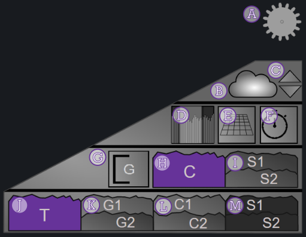

Controls#
Some configuration options can be controlled without editing the panel, via controls in the panel itself:
| ID | Action | Comments |
|---|---|---|
A |
Shows/hides the on-panel controls | |
B |
Shows/hides fog | |
C |
Increase/decrease fog height | |
D |
Shows/hides time range selector | |
E |
Shows/hides vertical gridlines | |
F |
Toggle transitions mode | |
G |
Toggle max Y type | |
H |
No charts breakdown | If the data contains multiple series, they are aggregated according to the Aggregation setting |
I |
Charts breakdown by series | Only applicable if the data contains multiple series |
J |
No totals breakdown | The data is aggregated across all series/charts/groups according to the Aggregation setting |
K |
Totals breakdown by group | The data is aggregated across all series/charts per group, according to the Aggregation setting |
L |
Totals breakdown by chart | The data is aggregated across all series per chart, according to the Aggregation setting |
M |
Totals breakdown by series | Only applicable if the data contains multiple series, and charts have per-series breakdown |
